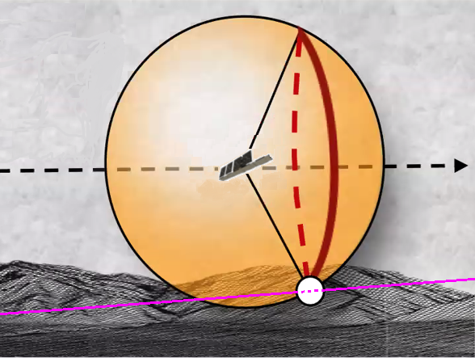
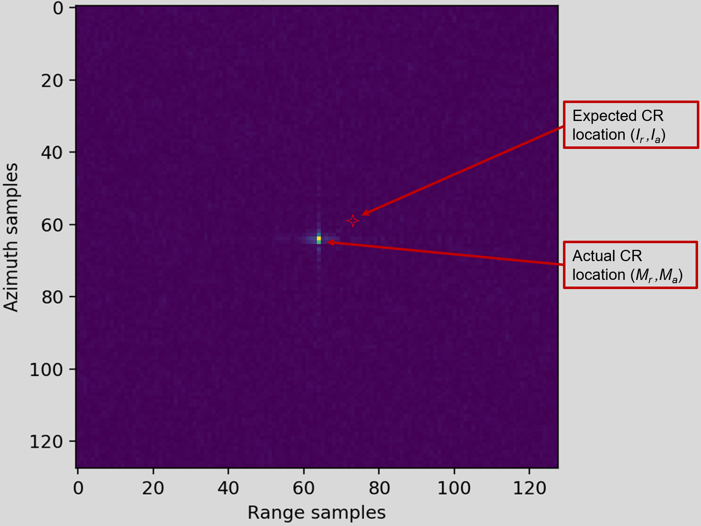
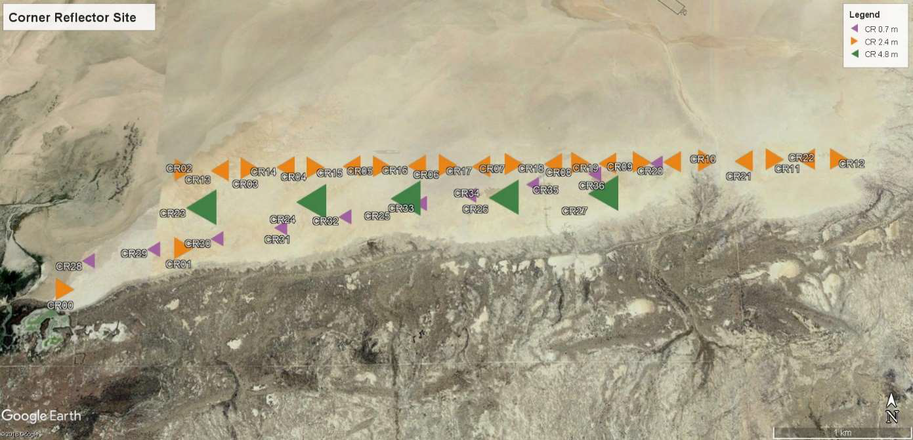
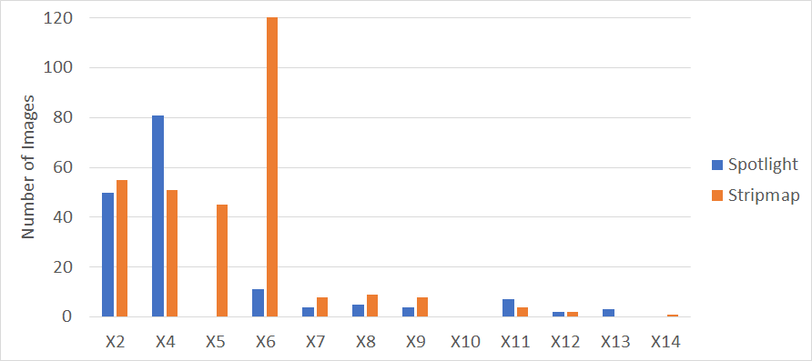
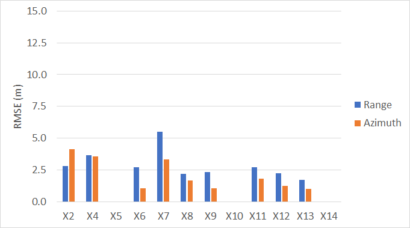
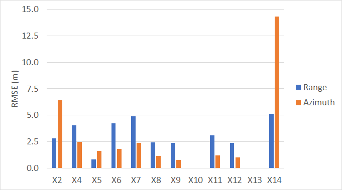

Verification and Validation of Geospatial Measurements
Verification and validation of geospatial measurements on SAR imagery is an integral part of ICEYE's quality control process. Below you will find our latest validation report. More reports will be added as they become available.
Method
'Geolocation' is the name of the process used to find the univocal correspondence between image pixels and their position on the Earth's surface. In this section we introduce a geolocation algorithm that we use to measure the geospatial accuracy of ICEYE imagery.
The purpose of geolocation is to calculate the difference between an observed objects's location measured from SAR imagery and its actual, ground-truth, location. The true 'ground truth' location of an object can be specified in a geocentric rotating coordinate system such as ECEF (Earth-centred, Earth-fixed) as having the coordinate \(R_o=[x_o,y_o,z_o]\). The satellite's location in this same reference system changes with time and is given by \(R_s(t)=[x_s(t),y_s(t),z_s(t)]\) and has a velocity given by \(V_s(t)=[v_{sx}(t),v_{sy}(t),v_{sz}(t)]\). From these, the slant range from the satellite to the object as a function of time \(s_r(t)\) is given by (1):
As the satellite transits past the object, the phase of its radar response varies providing the object's signature with a characteristic spatial Doppler frequency shift given by (2):
Geometrically, the objects position is found by calculating the intersection between a sphere of radius that corresponds to the range of the object (1), a cone defined by the Doppler frequency at a certain time (2) and the reference ellipsoid (see Fig. 1). There are two locations where all three parametric surface meet - one on the left side of the sensor and one on the right, which is why SAR systems only image on one side.

To calculate the geolocation accuracy of a SAR image the following steps are performed :
- The first step is the selection of calibration objects, usually corner reflectors, each with a known geographical location. For this purpose both publicly available corner reflectors and ICEYE's own dedicated corner reflectors are used. The object position \(R_o=[x_o, y_o, z_o]\) is used in the following step to calculate the expected target position in range and azimuth \((I_r,I_a)\) in the image.
- The second step is to determine the location of the sensor as a function of time by using the orbital state vectors provided in the metadata of each image. ICEYE orbital state vectors provide position and velocity every second which does not have the fidelity to accurately locate each azimuth location in the image and so the state vectors are interpolated.
- The expected range and azimuth position of the corner reflector \((I_r,I_a)\) is then calculated using Eq. (1) and Eq. (2). The azimuth position of the object corresponds to the time of closest approach between the object and the sensor which is the instant that the Doppler frequency shift of the object observed from the sensor is zero. (By convention ICEYE SAR images are processed to the zero Doppler location/time). The expected range position is calculated using the distance \(\mathbf{R_s(t)}-\mathbf{R_o}\) when the Doppler shift is zero. ie:
- The measured range and azimuth position \((M_r,M_a)\) of the calibration object is calculated by oversampling the SAR image and fitting the expected two-dimensional imaging response function to the object and measuring the location of the peak. This can be seen in Figure 2. The geolocation error in pixels is given by:

Rosamond Validation - April 2022: Spotlight & Stripmap
Test Site
During April 2022, a geolocation validation was performed using the Rosamond Corner Reflector Array (RCRA) area in California, USA1. At this location there are 38 Corner Reflectors, each in one of four dimensions (0.7 m, 2.4 m, 2.8 m and 4.8 m). Fig. 3.

Datasets
The geolocation accuracy was assessed based on 167 spot images taken between 22 August 2019 and 15 March 2022, and 304 strip images taken between 10 March 2019 and 01 June 2022. Fig. 4. shows a histogram with the number of images and their distribution among the different satellites operating in the ICEYE fleet over that period. Although there are fewer images for the newer satellites (the ones with larger number in the name), this report will continue to be updated to include more images from all satellites.

Results
An overview of the validation results is provided in Table 1. The overall geolocation accuracy in both the range direction and azimuth direction is better than 4m RMSE and is consistent between the two imaging modes. The results also show a ~3.0m systematic bias in the range direction, and about ~0.8m bias in the azimuth direction. The cause of these biases are currently under investigation and will be addressed in the following months. The detailed results can be found here for Spotlight images and here for Stripmap images (see also this this description of the columns in the results).
| Imaging Mode | #Images | #CR Observations | Range Error: μ±σ (m) | Range Error: RMSE (m) | Azimuth Error: μ±σ (m) | Azimuth Error: RMSE (m) |
|---|---|---|---|---|---|---|
| Spotlight | 167 | 2354 | -2.8±1.7 | 3.2 | -0.9±3.2 | 3.3 |
| Stripmap | 304 | 3388 | -3.2±1.8 | 3.6 | -0.7±3.1 | 3.1 |
The measured geolocation accuracy for each satellite for Spot images is shown in Fig. 5, and from Strip images is shown in Fig. 6.


Conclusions
The measurement of geospatial accuracy of SAR images is subject to multiple error sources, including uncertainties in terrain height, orbit knowledge, atmospheric propagation model, and sensor related uncertainties such as position along track, lever arms between GPS and antenna phase center, timing across track, and thermal variations. In some cases, orbit positional errors may introduce gross geospatial errors (larger than 50m in this analysis). Such errors are identified by ICEYE's QC procedures and are reprocessed before customer delivery. As such those images are currently not included in this analysis.
ICEYE’s satellite capabilities are constantly evolving, with older satellites being more prone to on-board timing errors. Newer satellites have improved on this and thus have better geospatial accuracy.
The geolocation accuracy from stripmap images are very similar to that from spotlight images in both range and azimuth directions.
The results also show a clear systematic bias in both range and azimuth directions that will be addressed in the following months to improve these values further.
References
-
R.J. Muellerschoen. The rosamond corner reflector array for sar calibration; past, present, future. 7th Nov 2017. Accessed 30 December 2021. URL: https://trs.jpl.nasa.gov/handle/2014/48764. ↩